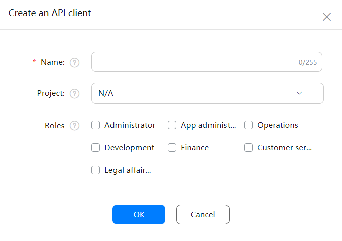
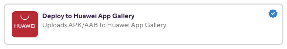
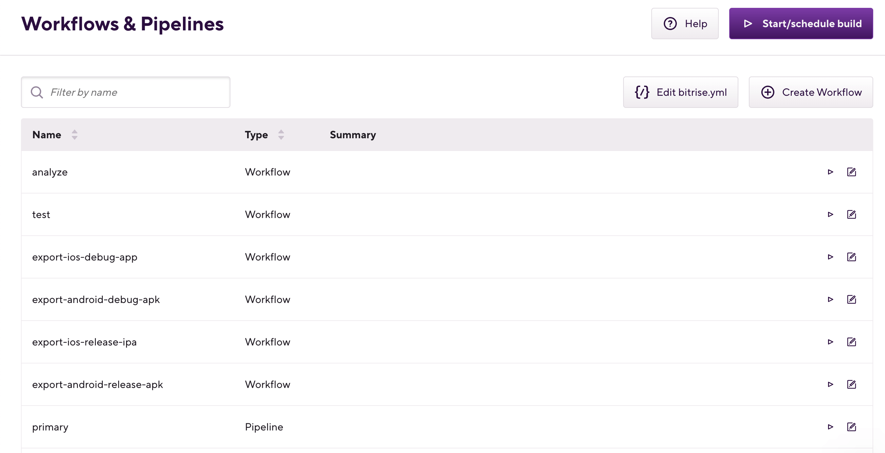
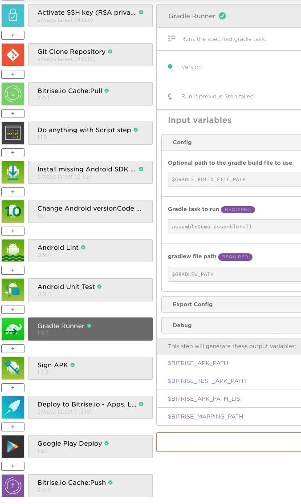
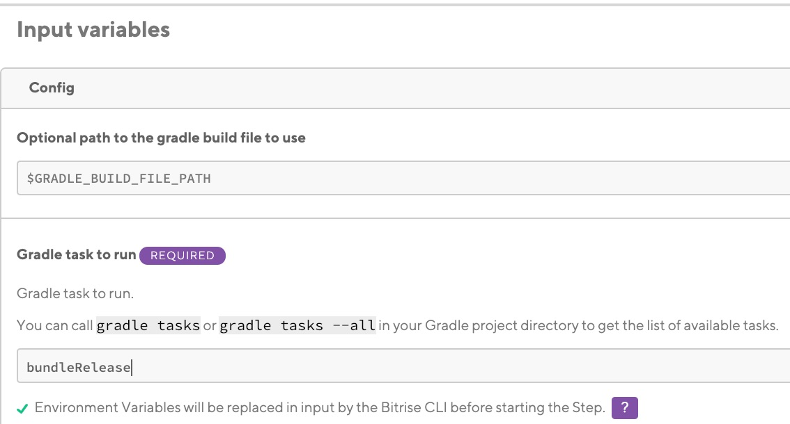
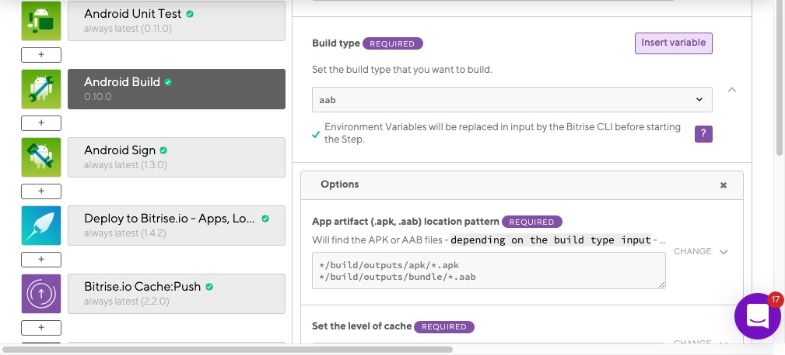
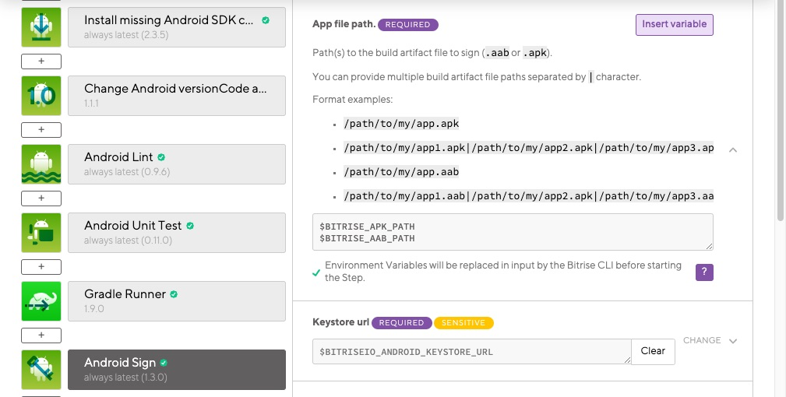

- Welcome to Bitrise documentation!
- Getting started
- Signing up for Bitrise
- Creating your first Workspace
- Adding a new app
- Webhooks and triggers
- Builds and Workflows
- Testing and deploying
- Migrating to Bitrise
- Signing up for Bitrise
- Creating your first Workspace
- Adding a new app
- Getting started with iOS apps
- Getting started with Android apps
- Getting started with React Native apps
- Getting started with Flutter apps
- Getting started with Ionic/Cordova apps
- Getting started with Expo apps
- Infrastructure
- Accounts
- Workspaces
- Apps
- Workflows and Pipelines
- Builds
- Code signing
- Testing
- iOS testing
- Android testing
- Flutter testing
- React Native testing
- Device testing with Firebase
- Test Reports
- Test Reports
- Exporting to Test Reports from any Step
- Running unit and UI tests for iOS apps
- Installing an .ipa file
- Registering test devices for iOS apps
- Device testing for iOS
- Running Android unit tests
- Device testing for Android
- Running tests in the Visual Studio App Center
- Running Detox tests on Bitrise
- Measuring your code coverage with Codecov
- Deploying
- Insights
- Bitrise CLI
- API
- References
- Getting started
- Bitrise Docs
Android deployment
Deploy Android apps to either bitrise.io, for testing, or to the Google Play Store, for release.
Deploy Android apps to either bitrise.io, for testing, or to the Google Play Store, for release. Learn about Google Play API, keystore files and APK flavors.
We recommend checking out Ship, our deployment solution that aims to save you a lot of headache in publishing your apps: Deploying with Ship.
Deploying Android apps to Bitrise and Google Play
You can deploy your Android apps to Bitrise or to Google Play by using our dedicated Steps and correctly configuring your project in Google Play Console.
This guide describes how you can add your Android project to bitrise.io and deploy the APK or AAB built from your project to Google Play Store.
You need a new service account created in the Google Play Console so that Bitrise can authenticate with Google Play Deploy during your build. The new service account has to be invited to Google Play Console as a user with the appropriate permission.
To set up your project for the first time:
Register a Google Play Developer Account. If you already have a Google Play Developer account, and have already deployed your app to Google Play Store, skip to Setting up Google Play API access.
Go through Setting up Google Play deployment for the first time.
Setting up Google Play API access
Grant the Google Play API access to your project by creating a service account and granting the necessary user permissions to the service account.
Turn on the Google Play Developer API for your project: Enable the API.
Create a service account on Google Cloud Platform: Create service accounts.
Create a new JSON key for the service account: Create and delete service account keys.
Instant download
When you click at the end of the process, the service account JSON key is automatically downloaded. Make sure to save it as you cannot access or download it again!
Invite your service account user on the Users & Permissions page in Google Play Console and grant the necessary permissions to be able to access and release apps on Google Play: Use a service account.
Check out the Google Play Developer API guide if you need more information on the process.
You have successfully prepared your Google Play Console project. A services credential account has been created which is authorized to manage your releases.
Setting up Google Play deployment for the first time
Deploying to Google play publishes your app to Google's online store. When you do it for the first time, this requires a bit more work than simply deploying to bitrise.io. Once the necessary configurations are in place, it becomes very simple.
When configuring Google Play deployment for the first time, you need to link your Google Play Developer account to an API project, set up API access, and upload the service account JSON key to Bitrise.
Upload the first AAB or APK manually to Google Play using the Google Play Console.
Link your Google Play Developer Console to an API project.
Set up API Access Clients using a service account: Please note when you create your service account on the Google Developer Console, you have to choose
jsonas Key Type.Grant the necessary rights to the service account with your Google Play Console. Go to Settings, then Users & permissions, then Invite new user. Due to the way the Google Play Publisher API works, you have to grant at least the following permissions to the service account:
Access level: View app information.
Release management: Manage production releases, manage testing track releases.
Store presence: Edit store listing, pricing & distribution.
As an optional step, you can add translations to your Store Listing: Translate & localize your app.
Deploying an Android app to bitrise.io
In this section, we'll go through how to deploy your Android app to bitrise.io.
Deploying to bitrise.io means that the build artifacts generated during the build will be available for download once the build is finished. You can use this to test your app on your own test devices, for example.
To deploy your app to bitrise.io:
Workflow Editor
bitrise.yml
Make sure your Workflow contains the Android Build Step to build your app.
Optionally, you can build your app with the Gradle Runner Step. This requires a bit more configuration from you but allows for more extensive customization.
Add the Deploy to Bitrise.io Step to your Workflow.
Notifying other users
You can use the Notify: User Roles and the Notify: Emails inputs of the Step to set up notifications about your deploy. Click the input names to reveal more information about how to configure them.
Optionally, set the Enable public page for the App? input of the Step to so the Step enables the public install page for your app.
Run a build.
Open the
bitrise.ymlfile of your app.Make sure your Workflow contains the
android-buildStep to build your app.workflows: example-workflow: steps: - android-build@1:Optionally, you can build your app with the
gradle-runnerStep. This requires a bit more configuration from you but allows for more extensive customization.Set the
moduleand/orvariantinput to tell the Step what to build.In this example, we're building a debug variant of the Android project.
workflows: example-workflow: steps: - android-build@1: inputs: - variant: debug - deploy-to-bitrise-io: {}Add the
deploy-to-bitrise-ioStep to your Workflow.workflows: example-workflow: steps: - android-build@1: inputs: - variant: debug - deploy-to-bitrise-io: {}Notifying other users
You can use the
notify_user_groupsand thenotify_email_listinputs of the Step to set up notifications about your deploy:The
notify_user_groupsinput allows you to send notifications based on the access roles granted to users. For example, you can set the input to notify everyone with an Admin and a Developer role. Set multiple roles separated by a comma:- notify_user_groups: admins, testers.The
notify_email_listinput only accepts Secrets, and the Secret should contain comma-separated lists of email addresses.
Optionally, set the Enable public page for the App? input of the Step to so the Step enables the public install page for your app.
Run a build.
The Deploy to Bitrise.io Step will deploy the app. You can share the generated binary with your team members using the build’s URL.
In this example, we're building the debug variant of an Android app, and deploy it to bitrise.io, as.
Deploying to Google Play
Deploying to Google Play requires a signed APK or AAB file and the Google Play Deploy Step.
Workflow Editor
bitrise.yml
If you're trying to deploy your app for the first time, make sure your Google Play configuration is set up correctly and that you uploaded your service account JSON key to Bitrise.
Uploading the service account JSON key file
We recommend uploading the service account JSON key to Bitrise but it is not mandatory: you can store it elsewhere and provide a direct link to it.
Open the App settings page, and select Code Signing.
On the Android tab, find the uploaded service account JSON key and copy the secret Env Var under its name.
For example,
BITRISEIO_SERVICE_ACCOUNT_JSON_KEY_URL.Open your Workflow and add the Google Play Deploy Step to it.
In the Service Account JSON key file path input, paste the Environment Variable you copied.
Direct path to the service account JSON key file
If you don't want to upload the service account JSON key to Bitrise, you can also add a file path right in the Step’s input field where the file path can be local or remote too:
For a remote JSON key file you can provide any download location as value, for example,
https://URL/TO/key.json.For a local JSON key file you can provide a file path url as value, for example,
file://PATH/TO/key.json.
In the Package name input, add the package name of your app.
In the Track input, add the track where you want to deploy your APK (for example, alpha/beta/rollout/production or any custom track you set).
If you're trying to deploy your app for the first time, make sure your Google Play configuration is set up correctly and that you uploaded your service account JSON key to Bitrise.
Uploading the service account JSON key file
We recommend uploading the service account JSON key to Bitrise but it is not mandatory: you can store it elsewhere and provide a direct link to it.
Open your app's
bitrise.ymlfile and add thegoogle-play-deployStep to it.deploy-workflow: steps: - google-play-deploy: inputs:In the
service_account_json_key_pathinput, you need to provide the path to the service account JSON key file.If you uploaded the file to Bitrise, you can find the Env Var storing its download URL in the Generic File Storage in the Workflow Editor.
deploy-workflow: steps: - google-play-deploy: inputs: - service_account_json_key_path: "$BITRISEIO_SERVICE_ACCOUNT_JSON_KEY_URL"If you didn't upload your service account JSON key to Bitrise, you can set a direct path in the input. The file path can point to a local or a remote location.
For a remote JSON key file you can provide any download location as value, for example,
https://URL/TO/key.json.For a local JSON key file you can provide a file path url as value, for example,
file://PATH/TO/key.json.
In the
packageinput, add the package name of your app.deploy-workflow: steps: - google-play-deploy: inputs: - service_account_json_key_path: "$BITRISEIO_SERVICE_ACCOUNT_JSON_KEY_URL" - package_name: myAppIn the
trackinput, add the track where you want to deploy your app binary (for example, alpha/beta/rollout/production or any custom track you set).deploy-workflow: steps: - google-play-deploy: inputs: - service_account_json_key_path: "$BITRISEIO_SERVICE_ACCOUNT_JSON_KEY_URL" - package_name: myApp - track: alpha
That’s all! Start or schedule a build and share the URL with external testers or distribute your app on an app store of your choice!
Deploying apps to Huawei AppGallery
You can deploy your Android apps to Huawei AppGallery via a verified Bitrise Step called Deploy to Huawei App Gallery. The Step can be used to deploy any APK file that you build on Bitrise.
You can deploy your Android apps to Huawei AppGallery via a verified Bitrise Step called Deploy to Huawei App Gallery. The Step can be used to deploy any APK file that you build on Bitrise.
The Step will need:
The App ID of the app.
The Client ID of the API client.
The Key generated for the API client.
To successfully deploy your app to Huawei AppGallery, you need a Workflow that:
Builds and signs an APK or AAB file.
Includes the Deploy to Huawei App Gallery Step to deploy the app.
To configure deploying with the Deploy to Huawei App Gallery Step:
Create a team-level API client on AppGallery Connect.
Open the Workflow Editor on Bitrise.
Go to the Workflow that you want to use for deploying the app.
Add the Deploy to Huawei App Gallery Step after the Steps that build and sign your APK.
Open the Config input group.
Fill in the required inputs.
File path: If you used a Step that automatically exports the
BITRISE_APK_PATHEnvironment Variable after building your APK, leave this unchanged. The Android Build Step is such a Step, for example.File name: The unique name of the APK file. This name will be used when uploading to the AppGallery Connect.
App ID: The identified can be found in the App information section on AppGallery Connect.
Client ID: The API client ID generated on AppGallery Connect.
Key: The key generated with the API client on AppGallery connect.
Take a look at the following bitrise.yml file to see an example configuration that uses the Deploy to Huawei AppGallery Step to deploy an app.
workflows:
deploy:
steps:
- activate-ssh-key@4:
run_if: '{{getenv "SSH_RSA_PRIVATE_KEY" | ne ""}}'
- git-clone@4: {}
- cache-pull@2: {}
- install-missing-android-tools@2:
inputs:
- gradlew_path: "$PROJECT_LOCATION/gradlew"
- gradle-runner@1.9:
inputs:
- gradle_file: "$GRADLE_BUILD_FILE_PATH"
- gradle_task: assembleRelease
- gradlew_path: "$GRADLEW_PATH"
- sign-apk@1.7: {}
- deploy-to-bitrise-io@1: {}
- cache-push@2: {}
- appgallery-deploy@0:
inputs:
- huawei_client_id: 'XXX'
- huawei_client_secret: "$CLIENT_SECRET"
- huawei_app_id: 'YYY' Run a build! If all goes well, you should see your app on Huawei AppGallery.
Generate and deploy multiple flavor APKs in a single Workflow
You can generate, code sign and deploy multiple flavor (multi-flavor) APKs/AABs in one workflow using our Gradle Runner Step.
You can generate, code sign and deploy multiple flavor (multi-flavor) APKs/AABs in one Workflow using our Gradle Runner Step. Flavor means enhancing an app’s core code with features resulting in different versions of the same app (just to mention the most common examples: free/paid, demo/full). Check out the official Android Studio guide on build types, flavors and build variants for more info! In this tutorial, you will need to do some settings to Android Sign and Google Play Deploy Steps - so keep your eyes peeled!
Generating multi-flavor APKs
To generate APK files for several different flavors:
Open your app on Bitrise.
Click the button on the main page.
On the Workflows & Pipelines page, find the Workflow you need and click into its row to open the Workflow Editor.
Insert Gradle Runner Step after the Android testing Steps. Android Build Step can only build one variant so if this Step is part of your Workflow, then we advise you to replace it with our Gradle Runner Step.
Click the Config section of the Step.
Specify assemble Gradle tasks by adding your build variants’ task names in the Gradle task to run Step input field - as many task names as many build variants you want to build in one workflow. Each task name must be exactly the same build variant name what you have listed in the Build Variant window of Android Studio! Make sure you separate them only with a space, no need for a comma ! In this image, you can see the order of the Steps for the deploy workflow and the Gradle Task to run Step input with two build variants:
assembleDemoandassembleFull(for APKs) orbundleDemoandbundleFull(for AABs)Gradle Runner generates a
$BITRISE_APK_PATH_LIST/$BITRISE_AAB_PATH_LISTEnvironment Variable output that contains APKs/AABs built for ALL build variants defined above. We will need this output Environment Variable later.
Signing and deploying multi-flavor APKs
Open your app on Bitrise.
Click the button on the main page.
On the Workflows & Pipelines page, find the Workflow you need and click into its row to open the Workflow Editor.
Add one Android Sign Step AFTER the Gradle Runner Step if it’s missing from your Workflow.
Set the App file path input to
$BITRISE_APK_PATH_LISTor$BITRISE_AAB_PATH_LISTdepending on which app format you built in the previous Gradle Runner Step.This will make sure all APKs or AABs get code signed with the keystore file you uploaded to the Code Signing tab. The Step will export either the
$BITRISE_SIGNED_APK_PATH_LISTor the$BITRISE_SIGNED_AAB_PATH_LISTEnvironment Variable output which contains the path of the signed app files for each build variant.Make sure you set the following input fields in the Android Sign Step:
Keystore url
Keystore password
Keystore alias
Add the Google Play Deploy Step AFTER the Android Sign Step.
Set the
$BITRISE_SIGNED_APK_PATHor the$BITRISE_SIGNED_AAB_PATHEnvironment Variable in the APK or App Bundle file path Step input field so that the Google Play Deploy Step can release all your build variants to the app store.
Generating and deploying Android app bundles
Creating an Android App Bundle with Bitrise is almost the same as generating an APK. You have to tweak a few Step inputs to compile an Android App Bundle (.aab) file from your code, then get the bundle signed and deployed to Google Play Store.
Creating an Android App Bundle with Bitrise is almost the same as generating an APK. All you have to do is tweaking a few Step inputs to compile an Android App Bundle (.aab) file from your code, then get the bundle signed and deployed to Google Play Store.
Step versions supporting bundle creation
The following Steps must be of the indicated version or newer - older versions of the Steps do NOT support bundle creation.
Android Build 0.10.0 or newer
Gradle Runner 1.9.0 or newer
Android Sign 1.3.0 or newer
Deploy to Google Play 1.6.0 or newer
Generating an Android App Bundle file
You can create an Android App Bundle with either the Gradle Runner Step or with the Android Build Step.
Using the Gradle Runner Step
Workflow Editor
bitrise.yml
Open your app on Bitrise.
Click the button on the main page.
On the Workflows & Pipelines page, find the Workflow you need and click into its row to open the Workflow Editor.
Insert the Gradle Runner Step after the Android Unit Test and Android Lint Steps in your Workflow.
Click the Config section of Gradle Runner.
In the Gradle task to run input field, set, for example,
bundleReleaseorbundleDebugto create a bundle of your project.APK and AAB in the same Workflow
If you wish to generate an Android App Bundle and an APK in one Workflow, you can specify an additional task in the Gradle task to run input field: set the input value to
bundleRelease assembleReleaseto generate release versions.
Open the
bitrise.ymlfile of your app.Insert the
gradle-runnerStep after theandroid-unit-testandandroid-lintSteps in your Workflow.my-workflow: steps: - activate-ssh-key: run_if: '{{getenv "SSH_RSA_PRIVATE_KEY" | ne ""}}' - git-clone: {} - install-missing-android-tools: {} - android-lint: {} - android-unit-test: {} - gradle-runner:In the
gradle_taskinput ofgradle-runner, set, for example,bundleReleaseorbundleDebugto create a bundle of your project.my-workflow: steps: - activate-ssh-key: run_if: '{{getenv "SSH_RSA_PRIVATE_KEY" | ne ""}}' - git-clone: {} - install-missing-android-tools: {} - android-lint: {} - android-unit-test: {} - gradle-runner: inputs: - gradle_task: bundleReleaseAPK and AAB in the same Workflow
If you wish to generate an Android App Bundle and an APK in one Workflow, you can specify an additional task in the
gradle_taskinput field: set the input value tobundleRelease assembleReleaseto generate release versions.
This way the Step will generate an Android App Bundle instead of an APK.
Using the Android Build Step
You can generate an Android App Bundle for your Android app with our Android Build Step as well:
Workflow Editor
bitrise.yml
Open your app on Bitrise.
Click the button on the main page.
On the Workflows & Pipelines page, find the Workflow you need and click into its row to open the Workflow Editor.
Add the Android Build Step after the Android Unit Test and Android Lint Steps in your Workflow.
Provide the root directory of your Android project in the Project Location input field.
Go to Build type and select
aabas build type.APK and AAB in the same Workflow
If you wish to generate an APK and an Android App Bundle in one Workflow, add two Android Build Steps after each other and configure one to build an Android App Bundle and the other to build an APK.
Open the
bitrise.ymlfile of your app.Add the
android-buildStep after theandroid-unit-testandandroid-lintSteps in your Workflow.my-workflow: steps: - activate-ssh-key: run_if: '{{getenv "SSH_RSA_PRIVATE_KEY" | ne ""}}' - git-clone: {} - install-missing-android-tools: {} - android-lint: {} - android-unit-test: {} - android-build:Provide the root directory of your Android project in the
project_locationinput field.Set the value of the
build-typeinput toaab.my-workflow: steps: - activate-ssh-key: run_if: '{{getenv "SSH_RSA_PRIVATE_KEY" | ne ""}}' - git-clone: {} - install-missing-android-tools: {} - android-lint: {} - android-unit-test: {} - android-build: inputs: - build-type: aabAPK and AAB in the same Workflow
If you wish to generate an APK and an Android App Bundle in one Workflow, add two
android-buildSteps after each other and configure one to build an Android App Bundle and the other to build an APK.
Signing an Android App bundle
Signing an Android App Bundle file works the same way as signing an APK: the most convenient method is to upload your keystore files to Bitrise and use the Android Sign Step:
Workflow Editor
bitrise.yml
Upload your keystore file to Bitrise.
Open your Workflow in the Workflow Editor, and add the Android Sign Step AFTER the build Step.
Make sure that the Keystore password, Key alias and the Key password input fields are filled out.
Default input values
If you have uploaded your keystore file and filled out the required credentials, the Android Sign Step's Keystore url, Keystore password, Keystore alias, and the Private key password inputs will get populated automatically!
Make sure the App file path input field displays the same output env var as the output of the build Step you've been using.
For example, Android Build exports either a
$BITRISE_APK_PATHor a$BITRISE_AAB_PATHEnv Var that points to the APK and/or AAB file the Step generated. By default, this input points at these Env Vars.Further configuration options
Check out all the available configuration options of the Android Sign Step in the Workflow Editor. You can:
Enable or disable memory page alignment with the Page alignment input.
Use
apksignerinstead of the defaultjarsignerwith the Enables apksigner input.Enforce a specific Signature Scheme with the APK Signature Scheme input.
Upload your keystore file to Bitrise.
In your app's
bitrise.ymlfile, add thesign-apkStep AFTER the build Step - for example,android-build- in your Workflow.sign-android-workflow: steps: - android-build: {} - sign-apk@1: inputs:Make sure that the
keystore_url,keystore_password, andkeystore_aliasinputs point to the correct location.sign-android-workflow: steps: - android-build: {} - sign-apk@: inputs: - keystore_url: "$BITRISEIO_ANDROID_KEYSTORE_URL" - keystore_password: "$BITRISEIO_ANDROID_KEYSTORE_PASSWORD" - keystore_alias: "$BITRISEIO_ANDROID_KEYSTORE_ALIAS"Default input values
If you have uploaded your keystore file to Bitrise and filled out the required credentials, you do not have to set the inputs at all: the default values, defined in the Step's
step.ymlconfiguration file, will point to the keystore file and the necessary credentials.Make sure the
android_appinput field displays the same output Env Var as the output of the build Step you've been using.For example,
android-buildexports either a$BITRISE_APK_PATHor a$BITRISE_AAB_PATHEnv Var that points to the APK and/or AAB file the Step generated. By default, this input points at these Env Vars.The Step will look for a binary to sign at the locations provided in this input.
sign-android-workflow: steps: - android-build: {} - sign-apk@1: inputs: - keystore_url: "$BITRISEIO_ANDROID_KEYSTORE_URL" - keystore_password: "$BITRISEIO_ANDROID_KEYSTORE_PASSWORD" - keystore_alias: "$BITRISEIO_ANDROID_KEYSTORE_ALIAS" - android_app: "$BITRISE_APK_PATH\\n$BITRISE_AAB_PATH"Further configuration options
Check out all the available configuration options of the
android-signStep in its step.yml file. You can:Enable or disable memory page alignment with the
page_aligninput.Use
apksignerinstead of the defaultjarsignerwith theuse_apk_signerinput.Enforce a specific Signature Scheme with the
signer_schemeinput.
And you should be done! If you would like to read more about Android code signing, check out our guide.
Deploying your Android App Bundle to Google Play
Deploying an AAB file isn't significantly different from deploying an APK to Google Play.
If you want to check the bundle prior to app store distribution, you can add the Deploy to Bitrise.io Step after the Gradle Runner / Android Build Steps. It uploads the bundle into the Artifacts tab of your Build’s page.
Setting up Google Play deployment for the first time
Deploying to Google play publishes your app to Google's online store. When you do it for the first time, this requires a bit more work than simply deploying to bitrise.io. Once the necessary configurations are in place, it becomes very simple.
When configuring Google Play deployment for the first time, you need to link your Google Play Developer account to an API project, set up API access, and upload the service account JSON key to Bitrise.
Upload the first AAB or APK manually to Google Play using the Google Play Console.
Link your Google Play Developer Console to an API project.
Set up API Access Clients using a service account: Please note when you create your service account on the Google Developer Console, you have to choose
jsonas Key Type.Grant the necessary rights to the service account with your Google Play Console. Go to Settings, then Users & permissions, then Invite new user. Due to the way the Google Play Publisher API works, you have to grant at least the following permissions to the service account:
Access level: View app information.
Release management: Manage production releases, manage testing track releases.
Store presence: Edit store listing, pricing & distribution.
As an optional step, you can add translations to your Store Listing: Translate & localize your app.
Deploying to Google Play
Deploying to Google Play requires a signed APK or AAB file and the Google Play Deploy Step.
Workflow Editor
bitrise.yml
If you're trying to deploy your app for the first time, make sure your Google Play configuration is set up correctly and that you uploaded your service account JSON key to Bitrise.
Uploading the service account JSON key file
We recommend uploading the service account JSON key to Bitrise but it is not mandatory: you can store it elsewhere and provide a direct link to it.
Open the App settings page, and select Code Signing.
On the Android tab, find the uploaded service account JSON key and copy the secret Env Var under its name.
For example,
BITRISEIO_SERVICE_ACCOUNT_JSON_KEY_URL.Open your Workflow and add the Google Play Deploy Step to it.
In the Service Account JSON key file path input, paste the Environment Variable you copied.
Direct path to the service account JSON key file
If you don't want to upload the service account JSON key to Bitrise, you can also add a file path right in the Step’s input field where the file path can be local or remote too:
For a remote JSON key file you can provide any download location as value, for example,
https://URL/TO/key.json.For a local JSON key file you can provide a file path url as value, for example,
file://PATH/TO/key.json.
In the Package name input, add the package name of your app.
In the Track input, add the track where you want to deploy your APK (for example, alpha/beta/rollout/production or any custom track you set).
If you're trying to deploy your app for the first time, make sure your Google Play configuration is set up correctly and that you uploaded your service account JSON key to Bitrise.
Uploading the service account JSON key file
We recommend uploading the service account JSON key to Bitrise but it is not mandatory: you can store it elsewhere and provide a direct link to it.
Open your app's
bitrise.ymlfile and add thegoogle-play-deployStep to it.deploy-workflow: steps: - google-play-deploy: inputs:In the
service_account_json_key_pathinput, you need to provide the path to the service account JSON key file.If you uploaded the file to Bitrise, you can find the Env Var storing its download URL in the Generic File Storage in the Workflow Editor.
deploy-workflow: steps: - google-play-deploy: inputs: - service_account_json_key_path: "$BITRISEIO_SERVICE_ACCOUNT_JSON_KEY_URL"If you didn't upload your service account JSON key to Bitrise, you can set a direct path in the input. The file path can point to a local or a remote location.
For a remote JSON key file you can provide any download location as value, for example,
https://URL/TO/key.json.For a local JSON key file you can provide a file path url as value, for example,
file://PATH/TO/key.json.
In the
packageinput, add the package name of your app.deploy-workflow: steps: - google-play-deploy: inputs: - service_account_json_key_path: "$BITRISEIO_SERVICE_ACCOUNT_JSON_KEY_URL" - package_name: myAppIn the
trackinput, add the track where you want to deploy your app binary (for example, alpha/beta/rollout/production or any custom track you set).deploy-workflow: steps: - google-play-deploy: inputs: - service_account_json_key_path: "$BITRISEIO_SERVICE_ACCOUNT_JSON_KEY_URL" - package_name: myApp - track: alpha
That’s all! Start or schedule a build and share the URL with external testers or distribute your app on an app store of your choice!
Exporting a universal APK from an AAB
With Bitrise's Export Universal APK Step you can export a universal APK from the App Bundle, sign it with a keystore (or debug keystore), and deploy the APK to your test device before releasing the app to the Google Play Store.
You can test an Android app on a test device even if the generated artifact is an App Bundle (.aab). With the Export Universal APK Step you can export a universal APK from the App Bundle, sign it with a keystore (or debug keystore), and deploy the APK to your test device before releasing the app to the Google Play Store.
Configuring this Step is super simple:
Workflow Editor
bitrise.yml
Insert the Export Universal APK Step after the Android Build Step in your Workflow.
Make sure the Android App Bundle path input's value is the output variable (
BITRISE_AAB_PATH) of the previous build Step.Using a different build Step
If you don't use the Android Build Step to build an AAB file, make sure that the input points to the AAB output of the Step you used. You can use an Environment Variable, or a direct local path or URL.
Make sure the Keystore URL input points to your Android keystore file.
We recommend uploading the file to Bitrise and using the default Env Var:
$BITRISEIO_ANDROID_KEYSTORE_URL. You can, however, use a local path or a URL as input value here.Provide your credentials in the Keystore alias and the Keystore password inputs.
If you uploaded a keystore file to Bitrise, the default value of the inputs should not need to be changed.
In the Bundletool version input, you can override the default Bundletool version if you need a specific one but make sure you use the correct version.
Run your Workflow.
In your app's
bitrise.ymlfile, insert thebitrise-step-export-universal-apkStep after theandroid-buildStep.my-workflow: steps: - android-build: {} - bitrise-step-export-universal-apk: inputs:Make sure the
aab_pathinput's value is the output variable ($BITRISE_AAB_PATH) of the previous build Step.Using a different build Step
If you don't use the
android-buildStep to build an AAB file, make sure that the input points to the AAB output of the Step you used. You can use an Environment Variable, or a direct local path or URL.my-workflow: steps: - android-build: {} - bitrise-step-export-universal-apk: inputs: - aab_path: "$BITRISE_AAB_PATH"Make sure the
keystore_urlinput points to your Android keystore file.We recommend uploading the file to Bitrise and using the default Env Var:
$BITRISEIO_ANDROID_KEYSTORE_URL. You can, however, use a local path or a URL as input value here.my-workflow: steps: - android-build: {} - bitrise-step-export-universal-apk: inputs: - aab_path: "$BITRISE_AAB_PATH" - keystore_url: "$BITRISEIO_ANDROID_KEYSTORE_URL"Provide your credentials in the
keystore_aliasand thekeystore_passwordinputs.If you uploaded a keystore file to Bitrise, the default value of the inputs should not need to be changed. Otherwise store your credentials in a Secret and use the Secrets as the input values.
my-workflow: steps: - android-build: {} - bitrise-step-export-universal-apk: inputs: - aab_path: "$BITRISE_AAB_PATH" - keystore_url: "$BITRISEIO_ANDROID_KEYSTORE_URL" - keystore_password: "$BITRISEIO_ANDROID_KEYSTORE_PASSWORD" - keystore_alias: "$BITRISEIO_ANDROID_KEYSTORE_ALIAS"In the
bundletool_versioninput, you can override the default Bundletool version if you need a specific one but make sure you use the correct version.my-workflow: steps: - android-build: {} - bitrise-step-export-universal-apk: inputs: - aab_path: "$BITRISE_AAB_PATH" - keystore_url: "$BITRISEIO_ANDROID_KEYSTORE_URL" - keystore_password: "$BITRISEIO_ANDROID_KEYSTORE_PASSWORD" - keystore_alias: "$BITRISEIO_ANDROID_KEYSTORE_ALIAS" - bundletool_version: 1.8.1Run your Workflow.
The Export Universal APK Step exports the APK to the $BITRISE_APK_PATH Environment Variable which the next Steps can pick up. If the Deploy to Bitrise.io Step is included in your Workflow, the Ship add-on can deploy the APK for you.